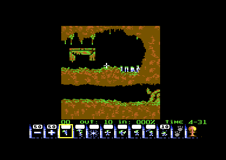
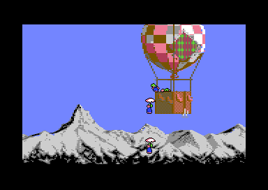
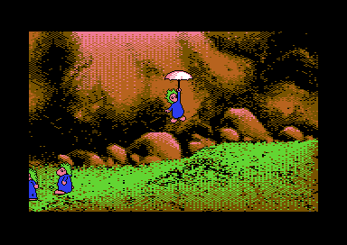
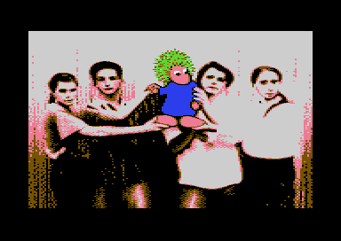

<meta charset="utf-8">
<meta name="viewport" content="width=device-width, initial-scale=1">
<title>{{title}}</title>
<link rel="preconnect" href="https://fonts.googleapis.com">
<link rel="stylesheet" href="https://fonts.googleapis.com/css2?family=Lato:wght@400;700;900&family=IBM+Plex+Mono:wght@400;500&display=swap">
<link rel="stylesheet" href="reference/lem-page.css">
<!-- tabs -->
<header class="hero">
  <p class="eyebrow">{{platform}} · {{year}} · {{publisher}}</p>
  <h1>{{title}}</h1>
  <p class="sub">The cave on the Commodore 64 is made of sprites: eight of them, stacked eight times down the screen by raster interrupts. The lemmings are drawn into characters, a fresh set every pass.</p>
</header>
<main class="wrap">

<section>
  <p class="fig">01 · The game</p>
  <h2 class="t">Lemmings, on three disks</h2>
  <p class="lede">E&amp;E Software's conversion of DMA Design's puzzle game: 100 levels in four ratings, Fun, Tricky, Taxing and Mayhem.</p>
  <p>Lemmings drop out of a trap door and walk, whatever is ahead of them. The player cannot steer them. Instead they hand out skills one lemming at a time: a climber, a floater, a bomber, a blocker that turns the others round, a builder of stairs, and three ways through the ground, the basher, the miner and the digger. A level is won when enough of them walk into the exit before the clock runs out.</p>
  <div class="lm-split">
    <div class="plate"><p class="cap">The title menu, with its credits in a scroller along the bottom.</p></div>
    <div class="plate"><p class="cap">Level 1 of Fun, "Just dig!", thirty seconds in. Ten diggers are on offer.</p></div>
  </div>
  <p>The boot disk holds the intro, the title menu and the play engine. Each rating's 25 levels are on a side of their own, disk 2 side A for Fun to disk 3 side B for Mayhem. Every level is a file that carries its own map, its own briefing and the access codes that lead to it and from it. The <a href="levels.html">Maps / levels</a> tab draws all 100.</p>
</section>

<section data-part="game">
  <p class="fig">02 · The play screen</p>
  <h2 class="t">A cave made of sprites</h2>
  <p class="lede">The terrain is eight multicolour sprites side by side, moved down the screen 21 lines at a time. The lemmings, the cursor and the panel are characters.</p>
  <div class="plate">
    <div class="lm-controls">
      <label><input type="checkbox" id="pf-boxes" checked> the sprites</label>
      <label><input type="checkbox" id="pf-lines"> the lines the chip's registers change on</label>
      <label><input type="checkbox" id="pf-nospr"> hide the sprites</label>
    </div>
    <canvas id="pf-cv" class="lm-canvas" width="768" height="544"></canvas>
    <p class="cap"><b>Drawn by this page from one recorded frame</b> of level 1 (<code>kit/c64/frame.py</code>): the video chip's registers as the frame began, all 166 writes to them and to the sprite pointers in the frame, each at its raster line, and the memory the chip read. Redrawn with the site's model of the video chip, all 104,448 pixels match the emulator's picture of the same frame. The boxes follow the sprites' Y registers through the frame: <span style="color:#d77a00">orange</span> for sprites 0-3, <span style="color:#1597b8">blue</span> for 4-7, grey for the panel's.</p>
  </div>
  <p>Sprites 0 to 3 cover the left half of the play area and sprites 4 to 7 the right, 24 pixels apart. Each half is moved down 21 lines at a time, so eight rows of eight sprites cover the 168 lines of the cave. The two halves are 8 lines out of step, and the interrupts alternate between them: on line 60 the handler moves sprites 0-3 down below the rows still being drawn (<code>band_first</code>, <code>$0935</code>), and from then on each interrupt points one half at the next slice of terrain and moves the other half down (<code>band_a</code>, <code>$093B</code>, and <code>band_b</code>, <code>$0956</code>). A table of 17 raster lines drives them, 251, 60, 71, 79 and on to 217 (<code>band_lines</code>, <code>$09F3</code>), every 8 and 13 lines by turns.</p>
  <p>The whole level is kept as sprite shapes, 13,104 bytes from <code>$8000</code>, laid out by the level's own unpacker so that each column of the level sits where a sprite expects it. The sprites show 64 shapes at <code data-part="">$6000</code>-<code data-part="">$6FFF</code>, and as the view scrolls a column of the level is copied in (<code>scroll_view</code>, <code>$0C90</code>). Moving the eight sprites' X positions does the fine scrolling (<code>scroll_sprites</code>, <code>$0CDF</code>). A lemming that digs or builds changes the level's own copy and the shown one at once (<code>terrain_write</code>, <code>$2930</code>).</p>
  <p>The sprites run 24 pixels wider than the play area, and the screen's characters cover the edges. The sprites are set behind the characters, so the lemmings, drawn in characters, stand in front of the cave. Character 1, which fills the screen around the play area, covers the sprites where they overhang.</p>
  <h3>Lemmings in characters</h3>
  <p>There are no hardware sprites left for the lemmings, so they are drawn in software. Every pass, each lemming takes fresh characters for the cells it covers, up to three rows of two, starting from character 2 (<code>next_char</code>, resident <a href="source-resident.html#0422"><code>$0422</code></a>), and its frame is ORed into them (<code>draw_lemming</code>, <code>$1AA2</code>). The cursor is drawn the same way into characters <code>$FC</code>-<code>$FF</code> (<code>draw_cursor</code>, <code>$1916</code>), and water into <code>$F4</code>-<code>$FB</code> (<code>animate_water</code>, <code>$2B96</code>).</p>
  <p>The drawing goes into the screen that is not shown. There are two, <code data-part="">$4000</code> with its characters at <code data-part="">$5000</code> and <code data-part="">$4400</code> with its own at <code data-part="">$5800</code> (<code>screen_d018</code>, <code>$1349</code>), so the characters drawn for the hidden screen never change the shown one. When the main loop has drawn one, the interrupt shows it at the next frame, but never sooner than five frames after the last swap (<code>irq_band</code>, <code>$08EA</code>). So the lemmings move at ten steps a second at most, while the cursor and the music keep the full fifty.</p>
  <h3>The panel</h3>
  <p>On line 217 the interrupt switches to the screen at <code data-part="">$4000</code> with a third character set, at <code>$7000</code>, for the panel, and puts four sprites over it, one of them the highlight on the chosen skill (<code>band_panel</code>, <code>$0989</code>, and <code>panel_setup</code>, <code>$0A04</code>). At line 251 the frame's first interrupt sets everything back for the top of the next frame and does the frame's other work: the screen swap, the music, the cursor and the keyboard.</p>
</section>

<section data-part="">
  <p class="fig">03 · Music</p>
  <h2 class="t">Music: eleven tunes on three players</h2>
  <p class="lede">The intro, every level and the end sequence have tunes of their own. The credits name Jeroen Tel, and the play engine's driver carries his name. The end tune, with its sampled applause, has its player in the end sequence's section below.</p>
  <div class="plate">
    <div id="lm-music"></div>
    <p class="cap"><b>The game's own players, run on the kit's 6502</b> through the site's model of the SID with the 6581's filter. The level tunes play on the play engine's driver (<a href="source-game.html#3000"><code>$3000</code></a>), started as play starts them; the intro's on the intro's own driver (<a href="source-intro.html#4000"><code>$4000</code></a>). The test beside this page (<code>test_music.js</code>) runs every tune on the simulator as the game calls it and compares every SID write of every frame with the page's.</p>
  </div>
  <p data-part="game">Nine tunes play in the levels, one to a file of its own, SA to SI, loaded with the level to <code>$3652</code> (<code>load_level</code>, <code>$5BAF</code>). The play engine's driver reads it through a table of 64 sequences, the tunes' parts and the sound effects together (<code>seq_ptr_lo</code>, <code>$3652</code>). The music starts with the first lemming out of the trap door, which starts sequences 1 and 2 on the first two voices (<code>release_lemmings</code>, <code>$1DD9</code>). With sound effects chosen at the title (key 4), the same driver plays effects instead (<code>play_sound</code>, <code>$29F8</code>).</p>
  <p data-part="game">The driver's text <code>(C) 1993 JEROEN TEL / MANIACS OF NOISE</code> sits at <code>$3009</code>, between its three entry points and its variables. The intro's driver is a smaller relative, without the text, and the ending's a third, with a channel for a sampled sound: an NMI from CIA 2's timer writes four bits at a time into the SID's volume (<code>sample_nmi</code>, ending <a href="source-ending.html#0938"><code>$0938</code></a>).</p>
</section>

<section data-part="game">
  <p class="fig">04 · Sound effects</p>
  <h2 class="t">Sound: six effects, one note each</h2>
  <p class="lede">With sound effects chosen at the title (key 4) instead of music, the same driver plays the effects. Each is one note of one instrument.</p>
  <div class="plate">
    <div id="lm-sfx"></div>
    <div class="lm-table-wrap"><table class="lm-table" id="sfx-table"></table></div>
    <p class="cap"><b>The play engine's driver, run on the kit's 6502</b>, starting each effect as <code>play_sound</code> (<code>$29F8</code>) does, with the tune file of level 1 loaded; every tune file carries the same six. <code>test_music.js</code> compares every SID write of each with the game's code.</p>
  </div>
  <p>An effect is a sequence like any part of a tune, kept in the level's tune file beside the music: sequences <code>$1A</code> to <code>$1F</code> of the table at <code>$3652</code>. Each is four to seven bytes: an instrument, a length, a note and the end. The instruments, 11 to 15 of the file's set, do the work with their own waveform, pulse and arpeggio settings, so a single note is enough for an explosion. <code>play_sound</code> starts the effect on voice 1 or voice 3 by turns, rewriting its own <code>LDX</code> operand each time, so an effect does not cut off the one before; in music mode it plays nothing. The trap door's creak is the exception: the level start plays it on voice 3 in either mode (<code>$2AB2</code>), and in music mode the tune then starts on voices 1 and 2.</p>
  <p>Nothing here is sampled. The digitised voices the developer's diary mentions, "Let's go" and "Oh no", are not in the game part: its driver writes the three voices only, and its NMI vector in play points at a bare <code>RTI</code>.</p>
</section>

<section data-part="game">
  <p class="fig">05 · The lemmings</p>
  <h2 class="t">Twenty-one actions, eight skills</h2>
  <p class="lede">Each lemming is a handful of bytes: an action, a direction, a position and an animation frame.</p>
  <p>A level has up to 50 lemmings, each with an action number in the low five bits of <code>lemming_action</code> (resident <a href="source-resident.html#0424"><code>$0424</code></a>) and its direction in bit 7. Its X, a 9-bit value, is the level's pixel plus 8, and its Y is the line it stands on. Every pass, <code>move_lemming</code> (<code>$1E94</code>) calls the handler for its action from a table of 21 (<code>action_handler_lo</code>, <code>$1E6A</code>). The <a href="graphics.html">Graphics</a> tab plays every action's animation.</p>
  <div class="plate"><div class="lm-table-wrap"><table class="lm-table" id="act-table"></table></div><p class="cap"><b>Read by this page from the listing</b>: the handler table's 21 addresses and the label each has in the Source tab.</p></div>
  <p>The handlers ask one question over and over: is there terrain at this offset from the lemming? <code>terrain_at</code> (<code>$28E8</code>) turns the offset into a byte of the sprite shapes and masks out one pixel. A level can also mark cells of steel and one-way walls in a separate map, two bits a cell (<code>cell_kind</code>, <code>$2E07</code>).</p>
  <p>The keys 1 to 8 choose a skill, <code>+</code> and <code>-</code> change the release rate, SHIFT pauses, and the back arrow ends the level, but only while paused. DEL pressed twice is the nuke, which gives every lemming a fuse (<code>key_action</code>, <code>$0AB4</code>). The joystick in port 2 or a 1351 mouse moves the cursor; the mouse is read through the SID's paddle registers (<code>read_mouse</code>, <code>$1704</code>). RESTORE does nothing in play: the NMI vector points at a bare RTI (<code>nmi_rti</code>, <code>$0B56</code>).</p>
</section>

<section data-part="game">
  <p class="fig">06 · Levels and files</p>
  <h2 class="t">A level is one file that unpacks itself</h2>
  <p class="lede">Every level file brings a 160-byte header, its terrain packed, the routine that unpacks the terrain, and its objects.</p>
  <div class="plate"><div class="lm-table-wrap"><table class="lm-table" id="hdr-table"></table></div><p class="cap"><b>Level 1's header, read by this page from the listing</b> (<code>level_header</code>, <code>$E000</code>), where the game part's snapshot has it at the briefing.</p></div>
  <p>The loader stays at <code>$CC00</code>-<code>$CFFF</code> in the resident part for the whole game. A file is asked for by a code byte: its top three bits pick the first letter of the name, F, T, X or M for the four ratings and P, I, C or S for the rest, and the low five bits the second letter. Every byte on the disk is stored EOR the byte before it, and the loader undoes the chain as it reads, by rewriting the operand of its own EOR (resident <a href="source-resident.html#CEAA"><code>$CEAA</code></a>). Then it unpacks: bytes below <code>$E0</code> are copied, and codes from <code>$E0</code> up repeat a byte or fill memory to an address (resident <a href="source-resident.html#CC8D"><code>$CC8D</code></a>).</p>
  <p>A level's own routine at <code>$E094</code> unpacks the terrain the same way to <code data-part="">$7E00</code>, then rearranges its 78 columns by 168 lines into sprite shapes at <code>$8000</code> (<code>unpack_terrain</code>). The briefing then checks that the file it loaded carries the access code the menu expects, and stops the machine with a red border if it does not (<code>show_briefing</code>, <code>$526E</code>; see <a href="discoveries.html">Discoveries</a>).</p>
</section>

<section data-part="menu">
  <p class="fig">07 · The code sheet</p>
  <h2 class="t">320 numbers from one addition</h2>
  <p class="lede">Before the title, the game asks for a number from a page of the manual, picked by the lemming picture on that page. The manual's sixteen tables follow a rule.</p>
  <div class="plate">
    <div class="pick"><a class="step" id="cs-prev" aria-label="previous page">‹</a><select id="cs-page" aria-label="page"></select><a class="step" id="cs-next" aria-label="next page">›</a></div>
    <div class="lm-row">
      <canvas id="cs-pic" width="192" height="168" style="background:#40318d;border-radius:4px;flex:none"></canvas>
      <div class="lm-grow"><p class="lm-note" id="cs-q"></p><div class="lm-table-wrap"><table class="lm-table" id="cs-nums"></table></div></div>
    </div>
    <p class="cap"><b>Drawn and computed by this page from the menu's bytes</b>: the page's picture, four sprites from <code>$A400</code>, and the twenty numbers by the game's own rule (<code>choose_question</code>, <code>$9EF6</code>). Click a number to see the question that asks for it. The test beside this page runs the game's code for all 320 and compares; the sixteen tables in the manual hold the same numbers.</p>
  </div>
  <p>Each page's first number is in a table (<code>page_first_lo</code>, <code>$A070</code>). Every number after it is the one before plus 23,171, less 56,831 whenever the sum reaches 56,831. So the manual's 320 numbers are one sequence the code works out on demand, and the disk carries 32 bytes of them. The question's page and line come from mixing the raster line over 256 reads, which changes with every boot. The answer is typed as five digits and compared with the number the game worked out (<code>$A1AC</code>).</p>
  <p>Typing the access code at the title (option 3) skips to any level. The codes for all 100 are in the menu, ten letters each, every letter EOR the one before it (<code>access_codes</code>, <code>$9701</code>), and in each level's own header.</p>
</section>

<section data-part="intro">
  <p class="fig">08 · The intro</p>
  <h2 class="t">Lemmings in pairs of sprites</h2>
  <p class="lede">Five pictures, each unpacked from the files IA and IB, with lemmings that walk, float down under umbrellas and climb.</p>
  <div class="lm-split">
    <div class="plate"><p class="cap">Scene 1: lemmings step out of the balloon's basket.</p></div>
    <div class="plate"><p class="cap">Scene 2: floaters land and walk off.</p></div>
  </div>
  <p>Each lemming in the intro is two sprites in the same place: a hires sprite in black for the outline over a multicolour sprite for the body, which gives it more colours than one sprite can have. Sixteen sprites make eight pairs. Pairs 0 to 3 are put on the hardware directly, and pairs 4 to 7 reuse the same sprites further down the screen: they are sorted by height and each gets a raster interrupt two lines above it (<code>build_bands</code>, <code>$581B</code>, and <code>sprite_band_1</code>, <code>$58DE</code>).</p>
  <p>Each actor follows a script of a few commands: a jump, a speed across or down, a position, and frames that last a number of steps (<code>read_script</code>, <code>$5554</code>). A step comes every fourth frame. The lemming images are 148 packed streams, unpacked into one of two buffers as an actor needs them, while the interrupt shows the other (<code>show_image</code>, <code>$4EAA</code>). Fire on the joystick skips the intro.</p>
</section>

<section data-part="ending">
  <p class="fig">09 · The end</p>
  <h2 class="t">The end sequence: a photograph and an applause</h2>
  <p class="lede">After level 25 of Mayhem the loader fetches one more file, IC, and runs it at <code>$C400</code>.</p>
  <div class="plate"><p class="cap">The end picture: five people with a lemming among them, a still multicolour bitmap (<code>end_bitmap</code>, <code>$A000</code>).</p></div>
  <p>The picture is a plain multicolour bitmap in video bank 2, with its colours copied into colour RAM (<code>end_picture</code>, <code>$C45B</code>). The sequence lasts 2,592 frames, about 52 seconds, or until fire is pressed, and then the game starts again from the title (<code>end_loop</code>, <code>$C415</code>).</p>
  <h3>Music: the end tune and its sampled applause</h3>
  <div class="plate">
    <div id="lm-end-music"></div>
    <p class="cap"><b>The ending's own player, run on the kit's 6502</b>, with CIA 2's timer counted down in the page and the game's interrupt handler run at each tick: 132,287 writes to the volume register in the 52 seconds. The site's model of the SID hears them as a 6581 does, by the level the volume scales when no voice sounds. <code>test_music.js</code> runs the same code on the simulator with a timer of its own and compares every SID write.</p>
  </div>
  <p>The tune's three voices play from the frame routine (<code>end_tune_frame</code>, <code>$0994</code>), but the volume is the sample's. The SID has no channel for a recording, so the ending plays one through the master volume: CIA 2's timer A raises an NMI at the sample's rate, 1.8 to 9.8 kHz by the note (<code>sample_rates</code>, <code>$10CD</code>), and each time <code>sample_nmi</code> (<code>$0938</code>) writes four bits of the recording into the low nybble of <code>$D418</code>, the high half of a byte, then the low. On a 6581 every volume step moves the chip's output, so the steps are the sound. The sound takes most of the file: about 30,000 bytes from <code>$1500</code> to <code>$886E</code>. The frame routine never writes the volume itself, and the silence routine leaves it at 0, so without the interrupt the whole tune is silent. The screen before it promises "a huge applause".</p>
</section>

</main>
<footer style="margin:16px 0 0;padding:22px var(--gx) 0;border-top:1px solid #e0ded8;font-family:'IBM Plex Mono',ui-monospace,Menlo,monospace;font-size:12px;color:#80838a"><a href="https://github.com/gamesexplained/gamesexplained" style="color:#1f5fa8;text-decoration:none">GitHub</a> · <a href="https://discord.gg/3V9GWyRDWV" style="color:#1f5fa8;text-decoration:none">Discord</a><br>© Games Explained contributors. Write-ups, facts and symbol maps are available under <a href="https://creativecommons.org/licenses/by-sa/4.0/" style="color:#1f5fa8;text-decoration:none">CC BY-SA 4.0</a>; code under <a href="https://opensource.org/licenses/MIT" style="color:#1f5fa8;text-decoration:none">MIT</a></footer>
<script src="../../lib/c64.js"></script>
<script src="../../lib/sid.js"></script>
<script src="../../lib/cpu6502.js"></script>
<script src="reference/lem-frame.js"></script>
<script src="reference/lem-tunes.js"></script>
<script>
/* lm-music */
// createDriver for C64Sid: runs the game's own players on the kit's 6502 (C64Cpu, which sid.js
// passes in). D.blocks holds each player's code and the level tunes' files; a tune names its blocks,
// the calls that start it ([entry, A, X], in the order the game makes them) and the routine called
// once a frame. The SID's registers are kept as the player writes them; other chips' writes (the
// ending's CIA 2 timer for its sample channel) go nowhere, and reads of them return 0.
function createDriver(D, C64Cpu) {
  'use strict';
  const m = new Uint8Array(0x10000), sid = new Uint8Array(25);
  let writes = [], pending = [], T = null, on = false;
  const cpu = new C64Cpu.CPU(m, { port: 0x35, io: {
    read(a) { return 0; },
    write(a, v) { if (a >= 0xD400 && a <= 0xD418) { sid[a - 0xD400] = v; writes.push(a - 0xD400, v); } },
  } });
  return {
    sid,
    get writes() { return writes; },
    init(t) {
      T = D.tunes[t]; m.fill(0); sid.fill(0); writes = [];
      for (const b of T.blocks) for (const [base, hex] of D.blocks[b]) for (let i = 0; i < hex.length / 2; i++) m[base + i] = parseInt(hex.substr(2 * i, 2), 16);
      for (const [e, a, x] of T.calls) cpu.call(e, { a, x, y: 0, d: 0 }, { maxSteps: 1e6 });
      pending = writes; writes = []; on = true;
    },
    stop() { on = false; writes = []; pending = []; },
    play() { writes = pending; pending = []; if (on) cpu.call(T.play, { d: 0 }, { maxSteps: 1e6 }); },
    playing() { return on; },
  };
}
// end of lm-music
</script>
<script>
/* lm-end-music */
// createDriver for the end tune, called once every D.period cycles (sid.js's period), not once a
// frame: the tune's sampled channel is an NMI from CIA 2's timer A that writes four bits at a time
// into the SID's volume ($0938), from 1.8 to 9.8 kHz, so the driver counts the timer down itself and
// runs the game's NMI handler at each underflow, and runs the frame routine ($0813) every 19,656
// cycles, as the end sequence's loop does once a frame. The timer follows the writes the game makes:
// $DD04/$DD05 the latch (the high byte loads a stopped timer), $DD0E bit 0 start and bit 4 force
// load, $DD0D the interrupt mask (bit 7 sets the bits given, otherwise clears them).
function createEndDriver(D, C64Cpu) {
  'use strict';
  const P = D.period, FRAME = 312 * 63;
  const m = new Uint8Array(0x10000), sid = new Uint8Array(25);
  let writes = [], pending = [], on = false, toFrame = 0;
  const cia = { latch: 0xFFFF, count: 0xFFFF, run: false, nmi: false };
  const cpu = new C64Cpu.CPU(m, { port: 0x35, io: {
    read(a) { return 0; },
    write(a, v) {
      if (a >= 0xD400 && a <= 0xD418) { sid[a - 0xD400] = v; writes.push(a - 0xD400, v); return; }
      if (a === 0xDD04) cia.latch = (cia.latch & 0xFF00) | v;
      else if (a === 0xDD05) { cia.latch = (cia.latch & 0xFF) | v << 8; if (!cia.run) cia.count = cia.latch; }
      else if (a === 0xDD0D) { if (v & 1) cia.nmi = !!(v & 0x80); }
      else if (a === 0xDD0E) { cia.run = !!(v & 1); if (v & 0x10) cia.count = cia.latch; }
    },
  } });
  return {
    sid,
    get writes() { return writes; },
    init() {
      m.fill(0); sid.fill(0); writes = []; toFrame = 0;
      Object.assign(cia, { latch: 0xFFFF, count: 0xFFFF, run: false, nmi: false });
      for (const [base, hex] of D.blocks) for (let i = 0; i < hex.length / 2; i++) m[base + i] = parseInt(hex.substr(2 * i, 2), 16);
      cpu.call(D.init, { a: 0, x: 0, y: 0, d: 0 }, { maxSteps: 1e6 });
      pending = writes; writes = []; on = true;
    },
    stop() { on = false; writes = []; pending = []; },
    play() {
      writes = pending; pending = [];
      if (!on) return;
      let budget = P;
      while (cia.run && cia.count < budget) {
        budget -= cia.count + 1; cia.count = cia.latch;
        if (cia.nmi) cpu.nmi(D.nmi, { maxSteps: 1e5 });
      }
      if (cia.run) cia.count -= budget;
      if (toFrame < P) { toFrame += FRAME; cpu.call(D.frame, { d: 0 }, { maxSteps: 1e6 }); }   // a frame starts in this call
      toFrame -= P;
    },
    playing() { return on; },
  };
}
// end of lm-end-music
</script>
<script>
/* code_sheet */
// The numbers on one page of the manual, as choose_question ($9EF6) works them out: the page's first
// number from page_first_lo/hi, then for each line 23,171 more, less 56,831 when the sum reaches it.
function pageNumbers(first) {
  const out = [first];
  let v = first;
  for (let line = 1; line < 20; line++) { v += 23171; if (v >= 56831) v -= 56831; out.push(v); }
  return out;
}
// end of code_sheet
</script>
<script>
(function () {
  const $ = id => document.getElementById(id);
  const hex = (n, w = 4) => '$' + n.toString(16).toUpperCase().padStart(w, '0');
  const note = (el, why) => { const p = document.createElement('p'); p.className = 'lm-note'; p.textContent = why; el.parentNode.insertBefore(p, el); };

  // ---- the play frame
  (function () {
    const cv = $('pf-cv');
    if (typeof C64 === 'undefined' || !window.LEM_FRAME) { note(cv, 'The frame is drawn with the site\'s shared script ../../lib/c64.js, which the built site serves.'); return; }
    const F0 = window.LEM_FRAME;
    const noSprites = Object.assign({}, F0, { vic: F0.vic.slice(), writes: F0.writes.filter(w => w[2] !== 0xD015) });
    noSprites.vic[0x15] = 0;
    // every place a sprite is shown in the frame: a Y register's value at the frame's start or after
    // a write, with the X it has then; the panel's sprites are those set from line 217 on, and the writes
    // from line 300 on set the sprites up for the next frame
    function instances(F) {
      const X = [], out = []; let msb = F.vic[0x10];
      for (let n = 0; n < 8; n++) { X[n] = F.vic[2 * n]; out.push({ n, y: F.vic[2 * n + 1], x: X[n] | ((msb >> n) & 1) << 8, panel: false }); }
      for (const [line, , a, v] of F.writes) {
        if (line >= 300) continue;                 // the next frame's set-up
        if (a >= 0xD000 && a <= 0xD00F) {
          const n = (a - 0xD000) >> 1;
          if (a & 1) out.push({ n, y: v, x: X[n] | ((msb >> n) & 1) << 8, panel: line >= 217 });
          else { X[n] = v; out.filter(o => o.n === n && o.panel).forEach(o => { o.x = v | ((msb >> n) & 1) << 8; }); }
        } else if (a === 0xD010) { msb = v; out.filter(o => o.panel).forEach(o => { o.x = (o.x & 255) | ((v >> o.n) & 1) << 8; }); }
      }
      return out;
    }
    const inst = instances(F0);
    const lines = [...new Set(F0.writes.map(w => w[0]))];
    function draw() {
      const r = C64.drawFrame(cv, $('pf-nospr').checked ? noSprites : F0, 2);
      const ctx = cv.getContext('2d');
      if ($('pf-lines').checked) {
        for (const l of lines) {
          const y = (l - r.line0) * 2; if (y < 0 || y >= r.h * 2) continue;
          ctx.fillStyle = 'rgba(255,40,40,.9)'; ctx.fillRect(0, y, 16, 2);
          ctx.fillStyle = 'rgba(255,40,40,.4)'; ctx.fillRect(16, y, r.w * 2 - 16, 1);
        }
      }
      if ($('pf-boxes').checked) {
        ctx.lineWidth = 2;
        for (const o of inst) {
          if (o.y < 30 || o.y > 250) continue;
          ctx.strokeStyle = o.panel ? 'rgba(210,210,210,.95)' : o.n < 4 ? 'rgba(255,150,0,.95)' : 'rgba(40,190,240,.95)';
          ctx.strokeRect((o.x - r.x0) * 2 + 1, (o.y + 1 - r.line0) * 2 + 1, 46, 40);
        }
      }
    }
    ['pf-boxes', 'pf-lines', 'pf-nospr'].forEach(id => { $(id).onchange = draw; });
    draw();
  })();

  // ---- the music
  (function () {
    const el = $('lm-music'), D = window.LEM_TUNES;
    if (typeof C64Sid === 'undefined' || typeof C64Cpu === 'undefined' || !D) { el.innerHTML = '<p class="lm-note">The player runs the game\'s own code through the site\'s shared scripts, ../../lib/sid.js and ../../lib/cpu6502.js, which the built site serves.</p>'; return; }
    C64Sid.mount(el, {
      driver: createDriver, data: D, filter: '6581',
      tunes: D.tunes.map(T => T.levels ? `${T.name} (${T.levels} levels)` : T.name),
    });
    C64Sid.mount($('lm-sfx'), {
      driver: createDriver, data: { blocks: D.blocks, tunes: D.sfx }, filter: '6581',
      tunes: D.sfx.map(T => T.name),
    });
    $('sfx-table').innerHTML = '<thead><tr><th>Sequence</th><th class="lm-l">Effect</th><th class="lm-l">When</th></tr></thead><tbody>' +
      D.sfx.map(T => `<tr><td><code>$${T.seq.toString(16).toUpperCase()}</code></td><td class="lm-l">${T.name}</td><td class="lm-l">${T.what}</td></tr>`).join('') + '</tbody>';
    C64Sid.mount($('lm-end-music'), {
      driver: createEndDriver, data: D.end, filter: '6581', period: D.end.period, digi: 2,
      tunes: [D.end.name],
    });
  })();

  // ---- the game's listing: actions and the level header
  if (typeof C64 !== 'undefined') C64.load('parts/game/listing.json').then(G => {
    const lo = G.sym('action_handler_lo'), hi = G.sym('action_handler_hi');
    let rows = '<thead><tr><th>Action</th><th class="lm-l">Handler</th><th class="lm-l">Its label</th></tr></thead><tbody>';
    for (let i = 0; i < 21; i++) {
      const a = G.ram[lo + i] | G.ram[hi + i] << 8;
      rows += `<tr><td>${i}</td><td class="lm-l"><code>${hex(a)}</code></td><td class="lm-l lm-mono">${G.names.get(a) || ''}</td></tr>`;
    }
    $('act-table').innerHTML = rows + '</tbody>';
    const m = G.ram, scr = b => { const c = b & 0x7f; return c >= 1 && c <= 26 ? String.fromCharCode(96 + c) : c >= 0x20 && c <= 0x5a ? String.fromCharCode(c) : '·'; };
    const txt = (a, n) => Array.from(m.subarray(a, a + n), scr).join('').trim();
    const code = a => Array.from(m.subarray(a, a + 10), b => String.fromCharCode(0x40 + b)).join('');
    const bytes = (a, n) => Array.from(m.subarray(a, a + n), b => b.toString(16).padStart(2, '0')).join(' ');
    const f = [
      ['$E000', 'its number, as text', txt(0xE000, 2)], ['$E004', 'rating', ['Fun', 'Tricky', 'Taxing', 'Mayhem'][m[0xE004]]],
      ['$E005', 'this level\'s access code', code(0xE005)], ['$E00F', 'the next level\'s code', code(0xE00F)],
      ['$E019', 'name, 30 characters', txt(0xE019, 30)], ['$E039', 'lemmings', m[0xE039]],
      ['$E03C', 'release rate, a step 0-23', m[0xE03C]], ['$E03D', 'percentage to save, as text', txt(0xE03D, 3)],
      ['$E040', 'number to save', m[0xE040]], ['$E041', 'minutes', m[0xE041]],
      ['$E044', 'the eight skills, tens then units', Array.from({ length: 8 }, (_, k) => m[0xE044 + k] * 10 + m[0xE04C + k]).join(' ')],
      ['$E05C', 'colours, four steps of the fade each', bytes(0xE05C, 16)],
      ['$E06C', 'entrances: column high, low, row', bytes(0xE06C, 9)],
      ['$E075', 'exits: column high, low, row', bytes(0xE075, 6)],
      ['$E07B', 'animated objects', m[0xE07B]],
      ['$E080', 'pointers into the file\'s own data', Array.from({ length: 10 }, (_, k) => hex(m[0xE080 + 2 * k] | m[0xE081 + 2 * k] << 8)).join(' ')],
      ['$E094', 'the terrain\'s unpacker', G.names.get(0xE094) || ''],
    ];
    $('hdr-table').innerHTML = '<thead><tr><th class="lm-l">Where</th><th class="lm-l">What</th><th class="lm-l">Level 1</th></tr></thead><tbody>' +
      f.map(([a, w, v]) => `<tr><td class="lm-l"><code>${a}</code></td><td class="lm-l">${w}</td><td class="lm-l lm-mono">${v}</td></tr>`).join('') + '</tbody>';
  });

  // ---- the code sheet
  if (typeof C64 !== 'undefined') C64.load('parts/menu/listing.json').then(M => {
    const sel = $('cs-page'), pic = $('cs-pic').getContext('2d');
    const lo = M.sym('page_first_lo'), hi = M.sym('page_first_hi'), pics = M.sym('page_pictures');
    const px = M.sym('picture_x'), py = M.sym('picture_y');
    const ord = n => n + (n % 10 === 1 && n !== 11 ? 'st' : n % 10 === 2 && n !== 12 ? 'nd' : n % 10 === 3 && n !== 13 ? 'rd' : 'th');
    for (let p = 0; p < 16; p++) { const o = document.createElement('option'); o.value = p; o.textContent = `Page ${p + 1}: its table starts ${M.ram[lo + p] | M.ram[hi + p] << 8}`; sel.appendChild(o); }
    let cur = 0, line = 5;
    function show(p) {
      cur = (p + 16) % 16; sel.value = cur;
      pic.fillStyle = '#40318d'; pic.fillRect(0, 0, 192, 168);
      const xs = [0, 1, 2, 3].map(k => M.ram[px + k]), ys = [0, 1, 2, 3].map(k => M.ram[py + k]);
      const x0 = Math.min(...xs), y0 = Math.min(...ys);
      for (let k = 0; k < 4; k++) C64.drawSprite(pic, M.ram.subarray(pics + cur * 256 + k * 64, pics + cur * 256 + k * 64 + 63), 48 + (xs[k] - x0) * 2, 42 + (ys[k] - y0) * 2, 2, '#ffffff');
      const nums = pageNumbers(M.ram[lo + cur] | M.ram[hi + cur] << 8);
      $('cs-nums').innerHTML = '<tbody>' + [0, 1, 2, 3].map(r => '<tr>' + [0, 1, 2, 3, 4].map(c => {
        const i = r * 5 + c; return `<td data-i="${i}" style="cursor:pointer${i === line ? ';background:var(--hl)' : ''}">${nums[i]}</td>`; }).join('') + '</tr>').join('') + '</tbody>';
      $('cs-nums').querySelectorAll('td').forEach(td => td.onclick = () => { line = +td.dataset.i; show(cur); });
      $('cs-q').textContent = `"Please enter the ${ord(line + 1)} number on the page featuring the lemming": ${nums[line]}`;
    }
    sel.onchange = () => show(+sel.value); $('cs-prev').onclick = () => show(cur - 1); $('cs-next').onclick = () => show(cur + 1);
    show(0);
  });
})();
</script>
